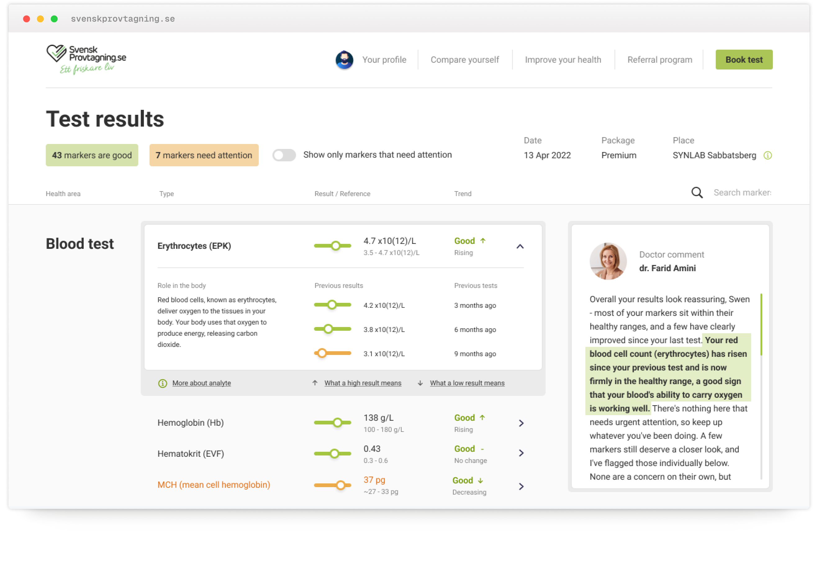
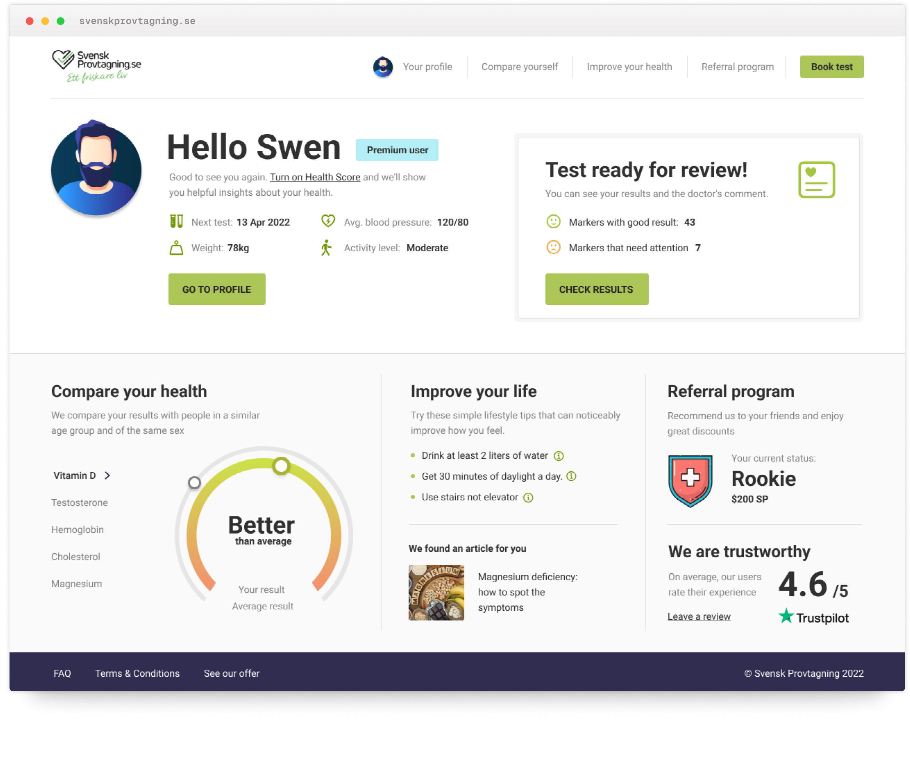
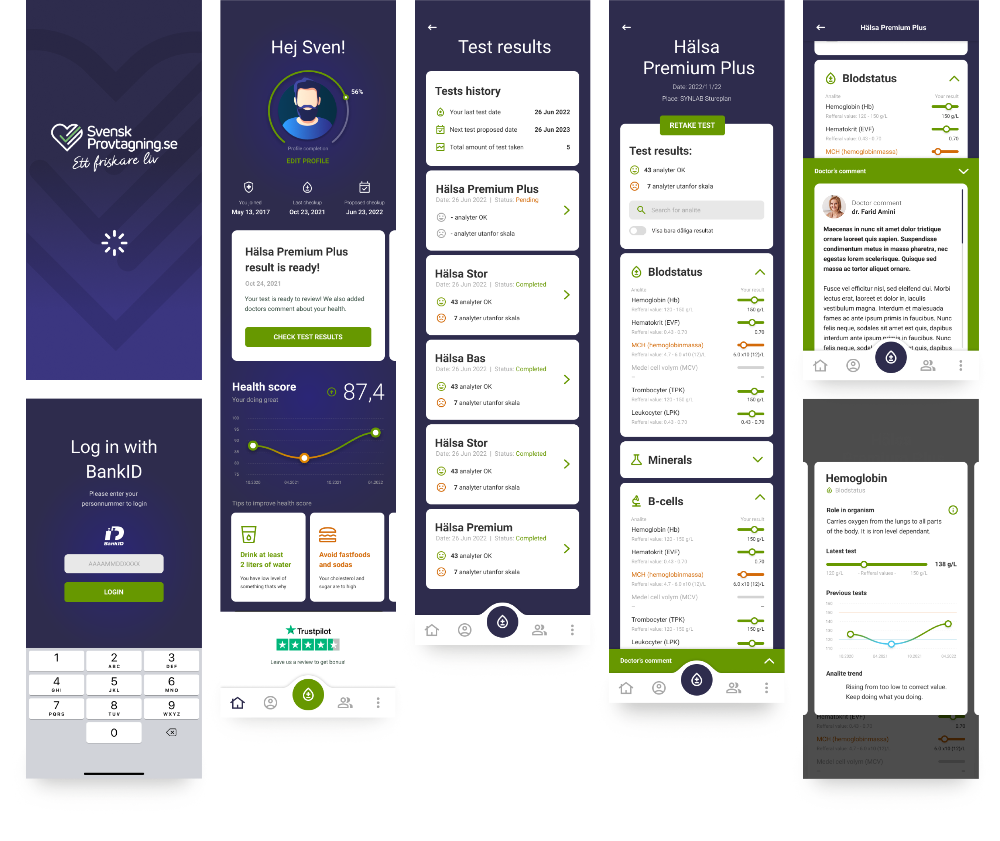

Blood tests
anyone can read
Svensk Provtagning lets people order their own blood tests and read the results themselves - no referral, no clinician to interpret them. I redesigned that experience: a new visual language, a rebuilt results view with history and a doctor's comment, and a native mobile app built on top of it - all so a non-clinical audience could actually understand their own health.

The tests worked.
Understanding them didn't.
Svensk Provtagning is a Swedish service where people order their own blood tests - no referral, no clinic visit to interpret the outcome. That independence was also the problem: users are not clinicians, yet they were handed hormones, organ-function markers, immune markers and blood fats to make sense of on their own.
The service already worked - comprehension didn't. I was brought in to redesign the experience, starting with the results view, and to build a visual language legible enough for a non-clinical audience to actually act on.
From a raw marker to
a result you can act on
This is where the redesign did the most work. Every marker is shown as a value positioned against its reference range, color-coded - so you can read your status without knowing what the unit means. On top of that, I added the two things that turn data into understanding: history, and a human voice.
- Triage in seconds"43 good · 7 need attention" before any single number.
- Value in range, not raw digitsColor-coded slider; no need to know the unit.
- Plain-language meaning"Role in the body" instead of clinical shorthand.
- HistoryTurn one value into a trend.
- Doctor's commentPlain words, highlighting the exact marker.

Not just numbers
- orientation, guidance, and trust
Results are only half the job. The post-login home turns a set of numbers into something people can actually use: it leads with a Health Score for instant orientation, translates results into simple, actionable habits, flags when a new test is ready to review, and backs the whole experience with visible social proof - a 4.6 rating and user reviews. It's the layer that builds confidence, so people don't just read their results, they trust them.
- Health Score, peer-comparedOne read tells you where you stand for your age and sex, before any single marker.
- Actionable next steps"Improve your health" turns results into simple habits, not just a diagnosis.
- Trust & social proofRating and user reviews reassure people that the numbers they're reading can be trusted.
- A clear next action"Test ready for review" surfaces good vs. needs-attention the moment you log in.

Reading your results
on the go
Alongside the desktop redesign, I designed a native mobile app for iOS and Android from scratch. It brings the essentials to the phone - Health Score, results, history and the doctor's comment - reworked for touch, so people can order tests and check their results wherever they are.
- ApproachableMedical results that feel human, not clinical.
- ReassuringClear guidance and plain language keep people calm about their health.
- FocusedOnly what matters on screen, nothing to decode.
The same problem, with AI as an interpreter
If I built this today, I'd put AI exactly where the comprehension gap still lives - not a chatbot bolted on, but proactive, plain-language insight on what each result means for you. The design problem hasn't changed: making medical data legible to the people living with it.
- Flags what actually changedReads your whole panel and surfaces what moved since last time.
- Explains it in plain languageWhat each result means for you - not just a number against a range.
- Connects the dots across markersSpots patterns across markers, not one result in isolation.
- Shows its reasoning, alwaysEvery insight comes with the "why" - never a black box.
- Assists, never replacesStates its confidence and backs the doctor's comment, not stands in for it.
This is exactly the kind of problem I like working on - complex, high-stakes data made legible for the people who actually have to act on it.
View case studies